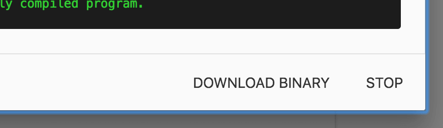

Migrating from previous Sonoff Tasmota setups is very easy. You just need to have
ESPHome create a binary for you and then upload that in the Tasmota web interface.
First follow the guides for the different supported devices and create a configuration
file. Then, generate and download the binary:
Using the Hass.io add-on/dashboard: Just click the COMPILE button, wait for
the compilation to end and press the DOWNLOADBINARY button.

Using the command line: run esphomelivingroom.yamlcompile (replacing
livingroom.yaml with your configuration file of course) and navigate to the
<NODE_NAME>/.pioenvs/<NODE_NAME>/ folder. There you will find a firmware.bin file.
This is the binary that you will upload.
In the “Upgrade by file upload” section, choose the binary you previously downloaded
If everything succeeds, you will see an “Upload Successful” message and ESPHome
will connect to the WiFi network configured in your .yaml file. üéâ
Happy Hacking!
Note
When using the esp8266_pwm output platform and
switching from Tasmota, you need to power-cycle the device once. After that
the dimming functionality will work as usual and no more power cycles are required.
Note
If you are using Tasmota 8+ and get an error after uploading the firmware, go to the console and type `SetOption781`, then restart the device and try the firmware again.
{kind=link}
{kind=link}